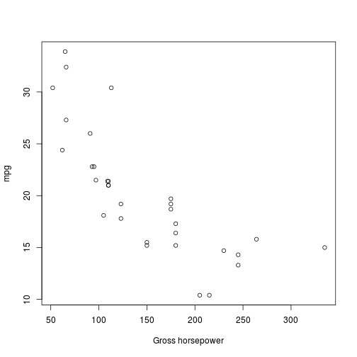

- This is a shinyapp that predicts the miles per gallon for a car
- It uses whatever data you can provide to make the prediction
- The linear model will change based on which values you have available
- Allows you to use up to 10 parameters
Eric M. Jalbert
Student
mtcars dataset input <- data.frame( hp = 125, wt = 3 )
fit <- lm(mpg ~ hp + wt, data = mtcars)
predict <- predict(fit, input)
predict
## 1
## 21.62216
mpg.mpg and hp (horsepower) is on the right.